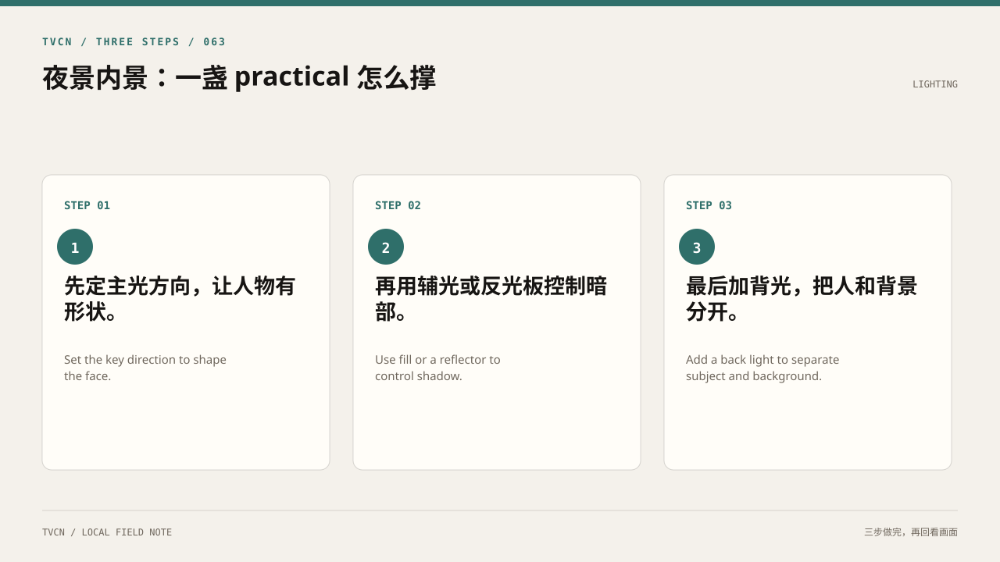

室内夜景先定“哪盏灯是真的”
画面里至少要有一盏可信的实景光源：台灯、窗、电视、走廊灯。人物补光从这盏灯的方向来，不要从摄影机方向打平。曝光保灯罩和窗外，暗部留一点细节。
拍前关掉所有非画面光源，避免混合色温和频闪；需要时用暗色窗帘压窗。
边界
夜景不是蓝月亮。室内夜戏可以有暖灯、冷窗、混合色；统一成单一蓝色，反而假。
现场
让画面里的一盏实际灯或壁灯当动机光。人脸 45 度补一盏小灯，背景保持暗，不要开顶灯。
DIAGRAM / Lighting
三步流程

怎么做
- 让画面里的一盏实际灯或壁灯当动机光，真的亮着。
- 人脸 45 度补一盏小灯，只给眼神光和鼻侧形状。
- 背景保持暗，不开顶灯，让亮区和暗区分开。
别踩
别开顶灯把房间打平；夜景不是把白天调暗。
图片说明：本页封面、图解与步骤图是编辑示意或结构图，不是本页实测照片，也不能当作器材测试证据；AI 辅助生成的图会在图注标出。判断器材或画面，以正文的测试条件与现场记录为准。